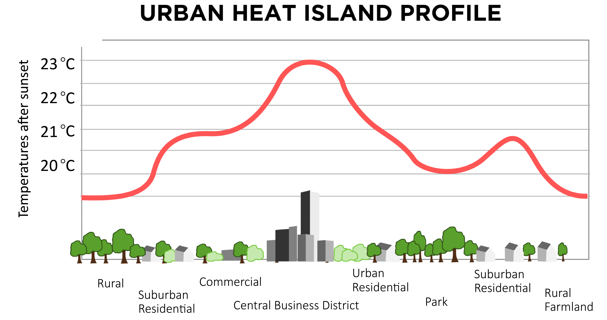
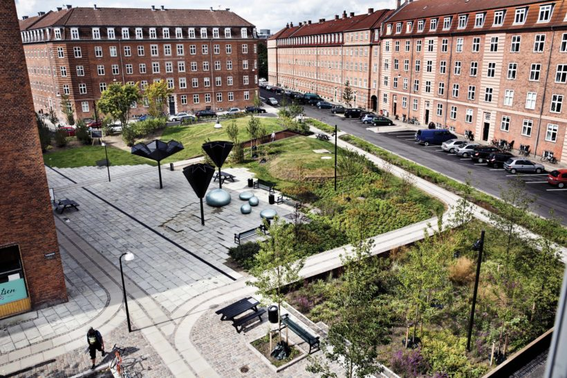
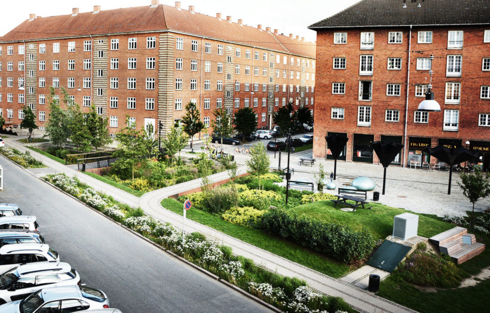
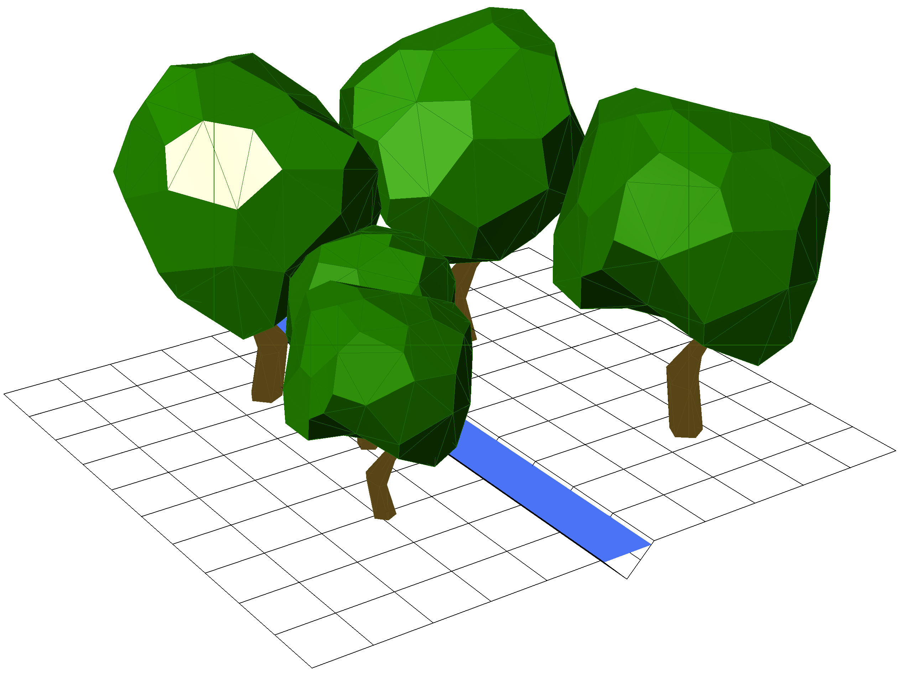
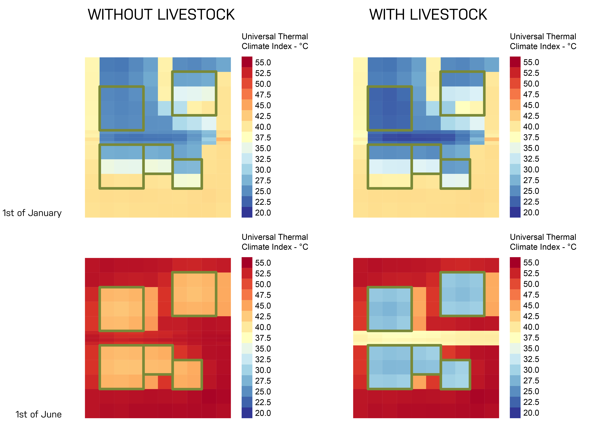

Introduction
Cities are places where people live, work, meet, trade, play and in general interact with each other. These interactions either require an outdoor space or transport through such a space. These spaces have often been neglected in the past to give way for cars and massive superstructures. The world is becoming more and more urbanized: in 2014, 73% of the population of Europe lived in cities and 54% of the world’s population did the same, in 2050 that number is projected to be 66% (UNDESA, 2014).
 Source: MetLink
One of the most important qualities for human activities within the city are if the weather is good or not. The weather can be subdivided into three climate levels: macroclimate, local climate and microclimate. Macroclimate is the surrounding climate related to the location; local climate is the climate surrounding cities and the microclimate is climate experienced in streets, squares and parks in the city (Gehl, 2001). The macroclimate is determined by the geography and location on earth. The local and micro- climate are influenced by the macroclimate but are also highly depended on the fabrics and geometry of the city (Oke, 1981) and these things can be engineered!
The Urban Heat Island (UHI) is a well-known and documented example of this (Roth, 2013). The phenomenon describes the local increase in temperature within a city compared to the rural surroundings. The increase in temperature is among others caused by the difference in surface coverings between urban and rural and especially the lack of vegetation in the urban context.
Even though the UHI is a local climate phenomenon caused and influencing the city as a whole, it is made up of the different microclimates in the city. Where it is hard and complex to make citywide changes to alter the local climate, the microclimate can easier be influenced. Surface coverings, building and street geometry can be formed so they provide the right amount of shade, blockage from the wind and relative humidity such that they create a comfortable frame for the activities that are conducted in the space – whether that is walking, siting and drinking coffee, playing or exercising. A lot of research have gone into describing the effects of surface coverings and geometries, while the vegetation aspect has often been neglected. Plants and trees also contribute to the thermal comfort of an outdoor space. They block the wind, creating shelter and furthermore, trees creates shade from direct sunlight. These effects are well described and can computed in practice. However, plants and trees evapotranspirational effects on the microclimate is not well described within the building engineering disciplines
Livestock
Livestock were created with the intention to make up for the lack of knowledge of vegetation in the built environment and was first introduced in (Kongsgaard, 2018). Livestock is a package for Grasshopper providing components for modelling water movement and hydrothermal effects around buildings to enable and evaluate sustainable solutions, where those effects are incorporated. Livestock and its hydrological simulation engine can compute the evapotranspiration of plants and thereby enhance the current methodology of outdoor comfort evaluation.
By creating good outdoor space a number of factors can be handled: storm water management, recreational space is added to the citizens, better microclimate can be acquired. Even though that these two issues seem unrelated, they are in fact connected and can be used to influence each other. The nature of the hydrological engine within Livestock makes it possible to evaluate both storm water management and evapotranspiration.
Source: BT
Situations such as the 2011 Copenhagen storm water event, which caused parts of the northern part of the city to become flooded shows that there is an urgent need to tackle these problems.
 Source: GHB Landskab
A recent example of a coupling between storm water management and a recreational space is the Taasinge Plads project in Copenhagen made by GHB Landskab. They introduced vegetation to a square in the neighborhood of Østerbro. The green areas both function as recreational space and as storm water basins, which would prevent flooding of the buildings around the square. While it might not have been the top priority of the design team, they also influenced the thermal comfort of the square by changing the urban fabric and increasing the evapotranspiration of the area.
 Source: GHB Landskab
 Source: GHB Landskab
Source: GHB Landskab
Case Studies
The run-off capabilities of Livestock was used to calculate a storm water event at the zoo in Philadelphia, USA. In the storm water event it was assumed that during one hour 50mm of rain fell on the site. Livestock was then used to compute run off patterns and the height of the water columns at the locations where water was gathering.
 Source: BIG
Source: BIG
Livestock was used to evaluate the benefit of trees and a water stream in a new neighborhood in Abu Dhabi (Kongsgaard, 2018). Abu Dhabi is located in a hot and dry climate and throughout most of the year the air temperature is above 20°C in Abu Dhabi and it is not unusual to have temperatures above 40°C. It makes it an ideal location for using evaporative cooling.
 Source: (Kongsgaard, 2018)
The analysis was centered around a small area on both sides of a wadi. The investigation compared the UTCI in a situation where evapotranspiration from the trees and the water in the wadi were neglected and one where Livestock was used to calculate the evapotranspiration of the trees and water. The charts shows a clear benefit of the evapotranspiration on the UTCI. Under the trees during the summer, there is almost a 15°C difference in UTCI between computing with and without evapotranspiration. The water vapour is assumed stationary in the current implementation of Livestock, meaning the it will not mix with the air outside of the mesh face, where it was created. In reality, this is of course not correct as water vapour would be dispersed with the wind and mixed.
 Source: (Kongsgaard, 2018)
Conclusion
The current state of Livestock is the first step towards computing the influence of water and water vapor’s influence on the microclimate. The case studies shows the usefulness of Livestock in the design phase, where it can be used to make more informed design decisions and advocate more biophilic design.
RESTORE Program
For more on the RESTORE program please visit their website
Bibliography
Gehl, J. (2001). Cities for People (1st ed.). Copenhagen: Bogværket. Kongsgaard, C. (2018). Hygrotermic Control of the Microclimate. Technical University of Denmark. Available Here Oke, T. R. (1981). Canyon geometry and the nocturnal urban heat-island - comparison of scale model and field observations. Journal of Climatology, 1(3), 237-. Roth, M. (2013). Urban Heat Islands. Handbook of Environmental Fluid Dynamics, Volume Two, 143–159. https://doi.org/doi:10.1201/b13691-13 UNDESA. (2014). World Urbanization Prospects. Undesa. https://doi.org/10.4054/DemRes.2005.12.9